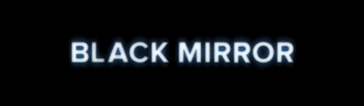
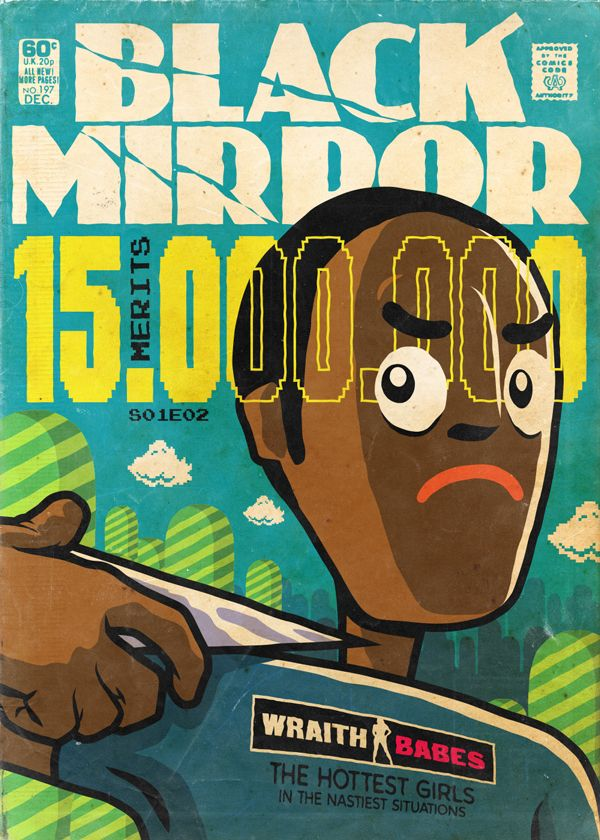
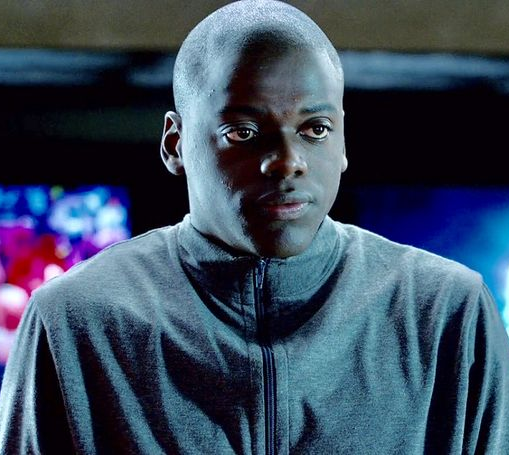
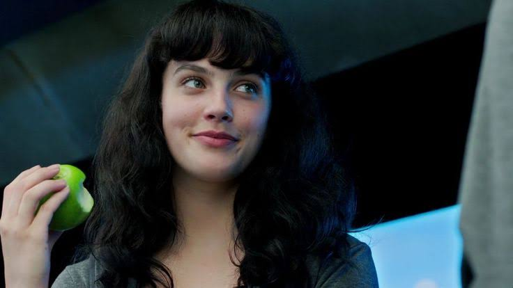
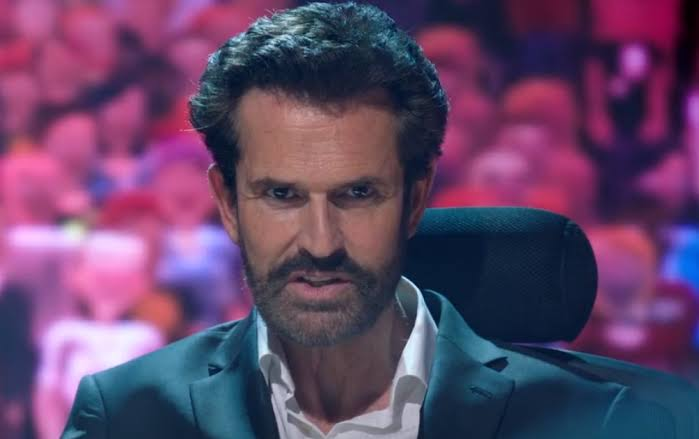

#SofraPeloSeuSucesso
Bing (Daniel Kaluuya) vive em uma sociedade onde as pessoas geram eletricidade pedalando bicicletas ergométricas para ganhar "méritos", a moeda local, usada para comprar necessidades e entretenimento virtual. Seu quarto é coberto por telas que exibem anúncios e programas.

Ele gasta suas economias para comprar um ingresso para Abi (Jessica Brown Findlay) participar do Hot Shot, um reality show de talentos. Apesar de seu talento vocal, Abi é coagida pelos jurados a se tornar uma atriz pornô no canal WraithBabes. Desolado, Bing economiza méritos para uma nova chance no Hot Shot, onde ameaça cometer suicídio ao vivo.

Sua raiva e discurso contra o sistema são, ironicamente, transformados em um programa de sucesso, e ele passa a viver em um apartamento de luxo, continuando seus discursos, mas agora como parte do sistema que criticava.

Foi o primeiro episódio de Black Mirror a ser escrito, embora tenha sido o segundo a ir ao ar.
A música "Anyone Who Knows What Love Is (Will Understand)" de Irma Thomas, cantada por Abi, é um easter egg recorrente na série, aparecendo em "Natal", "Homens Contra o Fogo", "Crocodilo", "Rachel, Jack e Ashley Too", "Joan É Horrível" e "Pessoas Comuns".
O programa Hot Shot é mencionado em "Calado e Dance" e aparece no pós-créditos de "O Momento Waldo".
A pornografia WraithBabes também é referenciada em "Crocodilo".
Uma revista em "Museu Negro" mostra Jack lendo uma história em quadrinhos com pontos do enredo de "Quinze Milhões de Méritos".
O jogo "Rolling Road" no site da Tuckersoft em Bandersnatch é uma referência ao ciclismo do episódio.
"Quinze Milhões de Méritos" oferece uma visão sombria do estado da humanidade na era digital, onde os corpos humanos são mercantilizados e a autenticidade é sacrificada em nome do espetáculo. A dependência da tecnologia é tão profunda que os indivíduos se tornam incapazes de funcionar sem ela, e as fronteiras entre o corpo físico e o virtual se tornam indistintas. O episódio demonstra como o sistema pode tolerar e até mesmo mercantilizar a dissidência, transformando a raiva de Bing em mais uma forma de entretenimento. A ambiguidade do final, com a vista da floresta de Bing, sugere que sua "liberdade" é apenas mais uma camada de simulação, uma prisão mais luxuosa. Isso ilustra como a sociedade pode ser manipulada para aceitar a opressão, desde que haja a ilusão de escolha ou a promessa de uma "salvação" através da fama e do consumo. O episódio é uma crítica ao neoliberalismo, onde a liberdade é apenas mais uma jaula pela qual se paga para ser aprisionado.
Os temas incluem consumismo, exploração, a indústria do entretenimento, a natureza da economia digital, hierarquia de classes e a desumanização.

Bing (Daniel Kaluuya): O protagonista que tenta escapar do sistema, mas acaba sendo absorvido por ele.

Abi (Jessica Brown Findlay): A jovem cantora cujo sonho é distorcido pela indústria do entretenimento.

Juiz Hope (Rupert Everett): Um dos jurados do Hot Shot, que representa a exploração e a hipocrisia do sistema.
❝Mostre-nos algo real e livre e bonito. Você não conseguiria. Isso nos quebraria.
Proferida por Bing, esta fala confronta a artificialidade do sistema e a perda de autenticidade na sociedade.
❝Tudo o que vemos aqui em cima, não são pessoas, não vemos pessoas aqui em cima, é tudo forragem. E quanto mais falsa a forragem, mais vocês a amam, porque forragem falsa é a única coisa que funciona mais.
A crítica contundente de Bing ao entretenimento de massa.
Data de Estreia:
11 Dez 2011
Duração:
1:02:17
Escritor:
Charlie Brooker & Kanak Huq
Diretor:
Euros Lyn